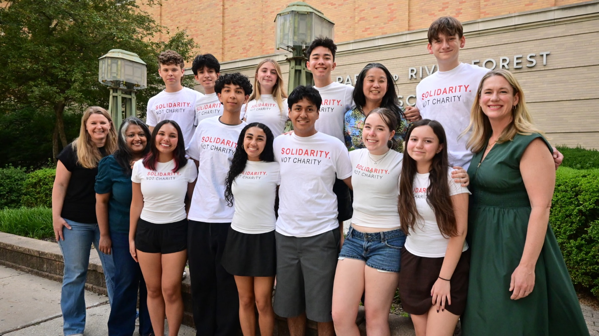
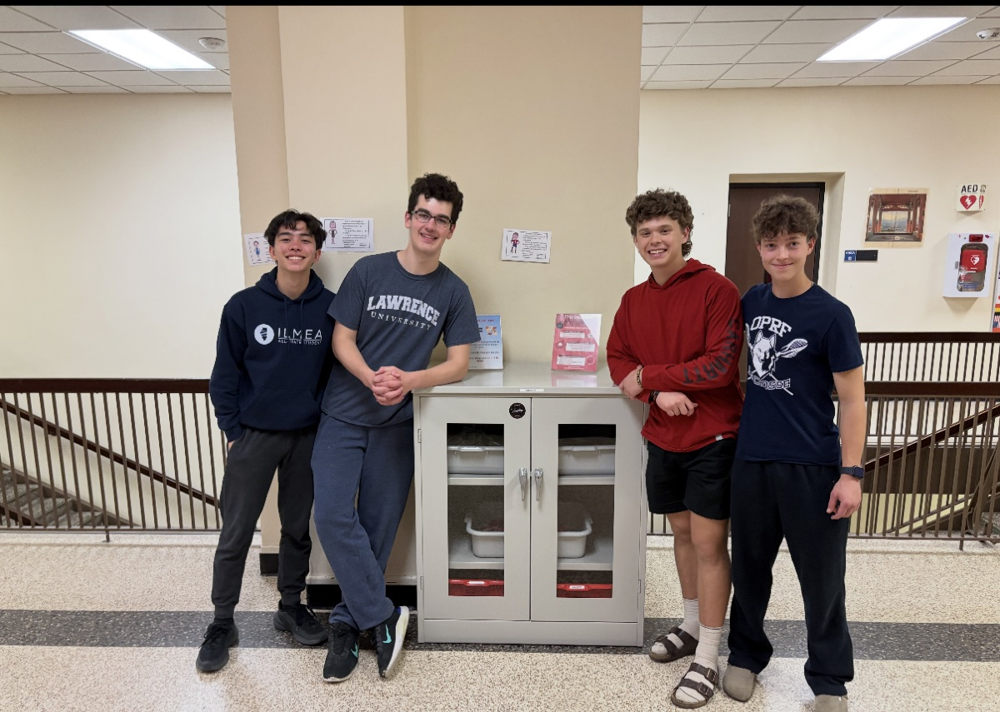
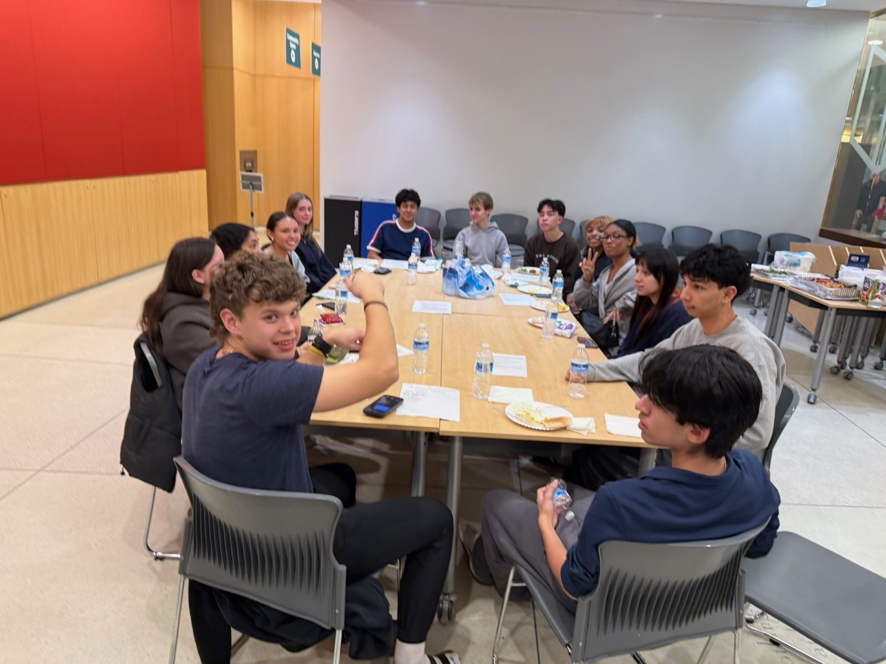

Cabinets where students already are
Four heavy-duty, pest-resistant cabinets launched in phase one — growing to sixteen placed throughout the building, near the elevators on every floor, with ADA-compliant handles so they're accessible to everyone.
Student-run mutual aid · Oak Park River Forest High School
Students Feeding Students keeps free snack cabinets stocked across OPRF High School — no forms, no questions, no stigma. Created by students, run by students, backed by our community.

Our mission
Based on free and reduced lunch and income data in our area, we estimate that at least 45% of OPRF students experience periods of food insecurity. Between early-morning activities, after-school practices, and long study sessions, hunger shouldn't be a barrier to a student's success.
Students Feeding Students began with the OPRF HS Mutual Aid Project — parents and students who came together to meet urgent needs in our school community. Talking with teachers and students made one need impossible to ignore: many students were coming to school hungry, especially as federal food benefits shrank.
Our answer is built on universal design: the cabinets are open to everyone, so no one has to prove they're poor enough or hungry enough to eat. Research shows universal food access reduces stigma and improves outcomes for all students — food-secure and food-insecure alike.

“They said they'd admit almost anything else rather than that they were hungry — because it was just such an embarrassing thing.”
— Researcher describing interviews with food-insecure teens
How it works
Four heavy-duty, pest-resistant cabinets launched in phase one — growing to sixteen placed throughout the building, near the elevators on every floor, with ADA-compliant handles so they're accessible to everyone.
Nutrient-dense, shelf-stable snacks chosen with dieticians at Beyond Hunger. Everything is labeled, and we avoid the most common allergens like peanuts and tree nuts wherever possible.
Any student can take what they need, whenever they need it. No forms, no lists, no gatekeeping — because commenting on who takes food is exactly what creates stigma.
Built in partnership with OPRF HS Mutual Aid, Beyond Hunger, school administration, faculty, and the building & grounds staff — with a student advisory council leading the way.
The need
Oak Park and River Forest look well-resourced — and the cost of living runs 23% above the national average. Hunger here hides in plain sight.
OPRF students qualify for free or reduced lunch — a family of four earning over $60,000 doesn't qualify at all. The students just past that cutoff are the “missing middle,” and this program is built for them too.
of Illinoisans experiencing hunger earn too much to qualify for food assistance, yet still struggle to put food on the table.
higher risk of mental-health struggles for youth in very-low-food-security homes compared to food-secure peers.
students' test scores rose — not just low-income students' — when universal free meals were introduced in NYC schools.
Sources: USDA Economic Research Service, Feeding America, Illinois hunger data, and peer-reviewed studies cited in our program proposal — email us for the full data sheet.
The impact — since launch on May 13, 2026
snacks shared through the cabinets in the first three weeks.
snacks in the first three days alone.
of students noticed the cabinets within the first week.
students — 40% of the school — took a snack in week one.
“As someone who has to skip breakfast to get to school on time most days, thank you so much for these cabinets.”
— OPRF student
How to help
$50 keeps roughly 50 snacks on the shelves.
The cabinets are installed — now every dollar goes toward filling them, wave after wave, all school year. Donations are processed securely through Zeffy.
Donate nowYour advocacy amplifies our impact. Share our story with friends, family, and neighbors — start with our feature in the Wednesday Journal.
Read “Snacks for students at OPRF”Stay connected and hear about what's next — we'll need your voice again.
Questions
Yes. When a child feels hunger pangs, their nervous system and brain are preoccupied — they can't feel safe moment to moment, and they can't meet the expectations of the school environment while in survival mode. When students don't meet expectations, they face consequences: lower grades, detention, punitive repercussions. Providing food increases safety for students experiencing food insecurity and for their teachers and classmates.
We work closely with community partners — including dieticians at Beyond Hunger — to provide nutrient-dense foods in the cabinets. But our foundational principle is that a “healthy” child is one who doesn't experience chronic hunger, so the most important goal is providing food students will actually eat. The “healthy / unhealthy” binary carries judgment we deliberately avoid.
As a community, we commit to feeding every child. If a student takes 2 or 10 or even 20 granola bars, we won't prevent it. Research finds that universal-design food programs — accessible to all — reduce stigma and produce better outcomes for every student. There's a lot we don't know about children's lives outside school, and we don't pass judgment on how many snacks they may need. Our advisory council and student leaders set the norms and adjust if needed.
Yes! To the extent possible, we source foods free from the most common allergens (like peanuts and tree nuts). All food is labeled, and — just like the school lunch program — we respect high schoolers' ability to know their own bodies. Signage around the cabinets encourages students to read labels and understand ingredients.
Our program includes a working relationship with the building and grounds staff, plus an educational component about respectful, responsible participation. Caring for our space is part of a caring curriculum — the cabinets are an authentic opportunity for students to be better stewards of the building. The advisory council monitors and refines best practices, and we expect (and plan for) a learning curve in the early months.
Hunger is a distraction — an invisible one. Studies link food insecurity to anxiety, depression, and school suspensions. As part of the program, we offer training for faculty and staff on identifying signs of hunger and distress, so teachers can discreetly connect food-insecure students with more support. We're hopeful classroom food expectations can be balanced with the focus on feeding hungry kids.
This program is bold and ambitious — based on our research, there is no other program of this scope operating in a public school in the country. OPRF has the opportunity to be a leader in addressing hunger in adolescence. Food is a basic need, and a school committed to equity must ensure that need is met. Is it actually radical to suggest our children shouldn't be hungry?
Email admin@oprfhsmutualaid.org with “Hunger Program” in the subject line. Someone from our advisory council will connect with you within a few days.
Get involved
SFS is led by a student advisory council and supported by a broader council of parents, faculty, D200 and D97 board members, local businesses, and Beyond Hunger staff. The council meets monthly — and students and parents receive a $25 grocery gift card for their time.
Ask about joining